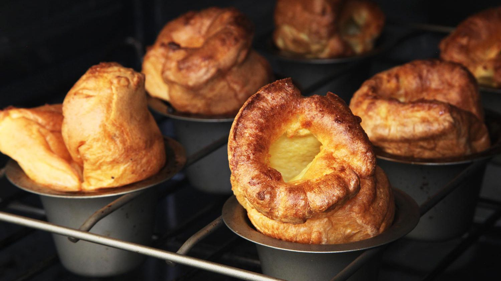

Yorkshire Puddings

Description
The absolute classic recipe for crisp and fluffy Yorkshire puddings.
The secret to getting gloriously puffed-up Yorkshire puddings is to have the fat sizzling hot and don't open the oven door!
Ingredients
- 140g plain flour
- 4 eggs
- 200ml milk
- sunflower oil
Steps
- Heat oven to 230C/fan 210C/gas 8.
- Drizzle a little sunflower oil evenly into two 4-hole Yorkshire pudding tins or two 12-hole non-stick muffin tins and place in the oven to heat through.
- To make the batter, tip 140g plain flour into a bowl and beat in 4 eggs until smooth.
- Gradually add 200ml milk and carry on beating until the mix is completely lump-free. Season with salt and pepper.
- Pour the batter into a jug, then remove the hot tins from the oven. Carefully and evenly pour the batter into the holes.
- Place the tins back in the oven and leave undisturbed for 20-25 mins until the puddings have puffed up and browned.
- Serve immediately. You can now cool them and freeze for up to 1 month.